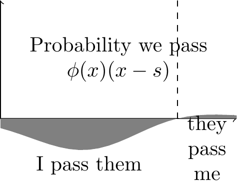
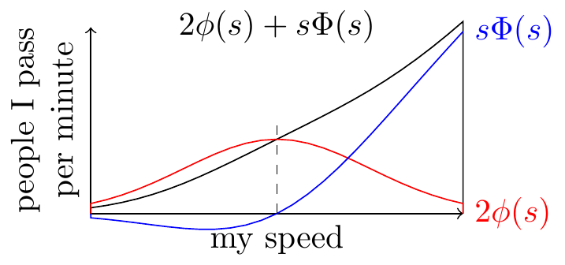
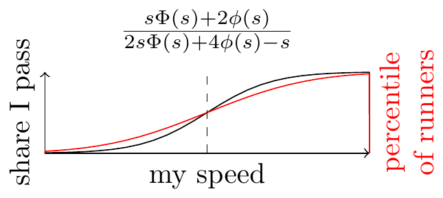

Suppose you pass 100 times as many runners as pass you.
Then there are only 10 times as many runners who you are faster than, than runners who are faster than you.
You’re less likely to pass, or be passed by, a runner whose speed is close to yours. So if you’re faster than 90% of runners you pass (or are passed by) this doesn’t imply you’re faster than 90% of all runners.
If we assume the distribution is normal.
Uniform Distribution of Speeds
With a uniform distribution you can easily see that the number of passings is proportional to the area of the triangle, and so proportional to the square of the number of runners below/above your speed.
Normal Distribution of Speeds



\[\begin{aligned} s &= \text{my speed} \\ x &\sim \phi, \text{other runners' speeds} \\ \text{runners I pass} &= \int_{-\infty}^s \utt{\phi(x)}{runners w}{speed $x$}\utt{(s-x)}{prob I}{pass them}dx\\ &= s\Phi(s) - \int_{-\infty}^s x\phi(x) dx \\ &= s \Phi(s) + \phi(s) \\ & \text{(last step uses $\phi=N(0,1)$)}\\ \text{runners who pass me} &= \int_{s}^\infty \utt{\phi(x)}{runners w}{speed $x$}\utt{(x-s)}{prob they}{pass me}dx\\ &= \left[ -\phi(x) -s\Phi(x) \right]^\infty_s \\ &= (0+\phi(s)) - (s-s\Phi(s))\\ &= \phi(s) - s + s\Phi(s) \\ \text{share I pass} &= \frac{s \Phi(s) + \phi(s)}{s \Phi(s) + \phi(s)+\phi(s) - s + s\Phi(s)} \\ &= \frac{s \Phi(s) + \phi(s)}{2s\Phi(s) + 2\phi(s) - s} \end{aligned}\]
Note on derivatives:
\[\begin{aligned} \phi(x) &= \frac{1}{\sqrt{2\pi}}e^{-x^2/2} && \text{(standard normal)}\\ \phi'(x) &= -x\phi(x) \end{aligned}\]
[1] 29.55388[1] 9.330527[1] 0.7791446[1] 0.6914625[1] 237.8047[1] 8.559642| std deviation | ratio speeds | ratio passes (gauss) | ratio passes (uniform) | ratio passes (t,df=1) |
|---|---|---|---|---|
| 0 | 1 | 1 | 1 | 1 |
| .5 | 2.2 | 3.5 | 5 | 1.9 |
| .7 | 3.1 | 5.9 | 9.6 | |
| .9 | 4.4 | 10 | 19 | |
| 1 | 5.3 | 13 | 28 | 3.3 |
| 1.3 | 9.3 | 30 | 86 | |
| 2 | 43 | 238 | 1849 | 8.5 |
∑# Post
Suppose you go for a run and you pass 90% of people you see (the other 10% of people pass you). What’s your overall rank in the distribution of speeds?
We can’t know for sure but if you assume the distribution of speeds is Normal then you’re at approximately 80% (i.e. 80% of runners are slower, 20% are faster). The asymmetry is because you’re relatively less likely to pass (or be passed by) people who run at a similar speed as you.
If you .
R simulation
pass <- function(x) {
x * pnorm(x) + 2 * dnorm(x)
}
passed <- function(x) {
x * pnorm(x) + 2 * dnorm(x) - x
}
share <- function(x) {
pass(x) / (pass(x) + passed(x))
}
x <- 0
density <- dnorm
pass_sum(0, function(x) {
dt(x, df = 1)
})
pass_sum(0, function(x) {
dt(x, df = 5)
})
passed_sum <- function(x) {
integral <- 0
for (speed in seq(x, 10, 0.1)) {
integral <- integral + dnorm(speed) * (speed - x) * 0.1
}
return(integral)
}
share_sum <- function(x) {
pass_sum(x) / (pass_sum(x) + passed_sum(x))
}
pass(0)
pass_sum(0)
passed(.5)
share(.5)
pnorm(.5)
share_sum(.5)
–> # References
Mathoverflow “You pass X people and Y people pass you: how relatively fast are you?” There are a number of sketches of answers but no explicit solutions. A few answers wrongly conclude that the ratio of overtakes/overtakens is equal to the ratio of faster/slower runners.
Clevenson, Schilling, Watkins and Watkins (2001) “The Average Speed on the Highway” – they show that if you’re passed by an equal number of cars that pass you, then you’re driving the average speed (not necessarily the median speed).